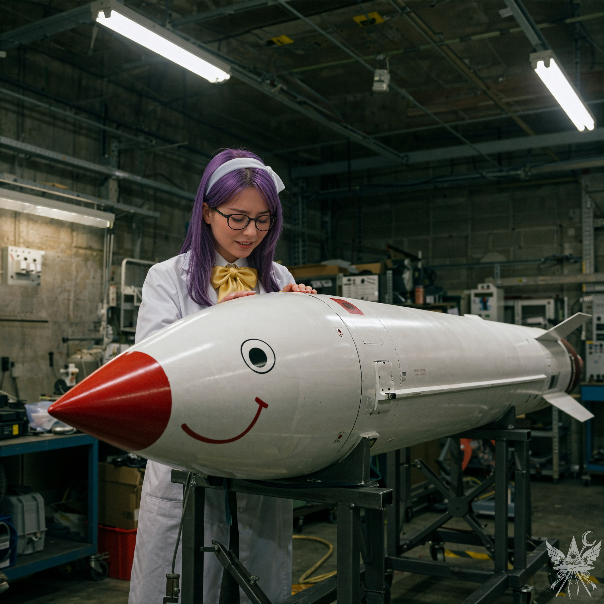

第10章 ミミちゃん
（先ほどの里香の逮捕、何もできず見過ごしたことが、少し心に引っかかっているわね。儀式の場所を借りるためにも、恩を売っておいて損はないはずだわ）魔法の力を秘めたこの古代遺跡には、一刻も早く儀式を行えるだけの強力な魔力の源があると感じていた。しかし、住人の一人である里香を助け出さない限り、理香子から儀式の許可を得ることはできない。ルイズに向き直り、計算を隠した丁寧な声音で告げた。
「申し訳ありませんが、ルイズさん。私はここに残って、里香の脱出を手伝います。やっと儀式ができそうな場所を見つけたので、自分の目的を優先させてもらいますわ」
「あら、そう。あなたがそう決めたのなら構わないわ。頑張ってね。またどこかで縁があったらお会いしましょう」ルイズは少しも執着を見せることなく、大人の余裕を感じさせる涼しげな笑みを浮かべた。キッチンへ戻ると、冷めた魚をつついていた理香子へ速やかに別れを告げる。
「ご馳走様でした。名残惜しいですが、そろそろお暇いたしますわ」
「もう行かれるの？ お二人とも旅の仲間ではなかったのかしら」理香子が残念そうに目を伏せたため、すかさず言葉を挟む。
「たまたま道でご一緒しただけです。私はここに残って、里香の救出に協力いたします」
理香子の顔に、安堵と親愛の情が広がった。
「ありがとう、メデアさん！ 小兎姫は手ごわい相手だから、とても心強いわ」
「ごめんなさいね、私は約束があるからもう行かなくちゃ……」ルイズが出口へと向かいかけた背中に、どうしても気になっていたことを投げかける。
「ねぇ、ルイズさん。先ほど仰っていた『儀式にちょうどいい場所』とは、どこなのですか？」
「あら、そんなに気になるの？ ここから東の山を越えたところに、『夢幻館』という屋敷があるのよ。そこの女主人、なかなか面白い御仁でね。気が向いたら訪ねてみるといいわ。世界観が変わるかもしれないわよ」
その名を聞いた途端、理香子は露骨に顔を顰めた。
「うへぇ……ルイズさん、本気？ あの屋敷はちょっと……ねぇ。せめて、外までは見送りに出るわ。私たちもそろそろ準備しないと」
外の空気に触れた途端、ルイズはふわりと重力を無視して軽やかに宙へ浮かび上がり、こちらを見下ろして手を振った。
「ルイズさん……空を飛べるのですか？」
「あら？ メデアさんは飛べないの？」地面からわずかに浮遊したまま、ルイズはさも当然のように首を傾げる。
「飛べるのなら、なぜ今まで歩いていたのです？」
「せっかくの旅情を味わうためよ。幻想郷の景色は空から見下ろすだけではもったいないもの。それに、あなたと一緒に歩くのも退屈しのぎにはなったわ」
（なるほど。この世界の住人は平然と空を飛ぶ者が多いようね）「ということは、朝倉さんも空を飛べるのですか……？」
「ええ。でも、あんな風に身一つで飛んだりはしないわ。私には私流のやり方があるの」理香子は自信ありげに微笑んだ。
「それじゃあ、行くわね。さようなら」ルイズは遠くの山々へと一直線に飛び去っていった。彼女の姿が夜闇に紛れるのを見届けてから、理香子へ向き直る。
「さあ、あいつのところへ行きましょう。メデアさん、本当に協力してくれるのね？ 小兎姫に見つかったら、あなたまで捕まってしまうかもしれないわよ？」
「ええ、問題ありません。私も里香に用事がありますから、何とかしてみせます。それより、あとどれくらいで出発するのですか？」
理香子は夕暮れの空を見上げた。
「日が暮れてきたわね……そろそろよ」
連れ去られた方向を睨みながら、懸念を口にする。
「小兎姫の牢獄は遠いのでしょうか。私は飛べないので、時間がかかりそうですが」
「心配いらないわ。ミミちゃんで一緒に飛びましょう。きっと気に入るはずよ」
（ミミちゃん？）
不可解な名前に首を傾げながら、地下へと戻る理香子の後を追う。キッチンの反対側へ進むと、航空燃料と機械油の鼻を突く匂いが立ち込める薄暗い空間へと出た。
工業用の投光器が鈍い音を立てて点灯する。

冷え切ったコンクリートの地下格納庫に、圧倒的な質量と冷気を放つ巨大な金属の塊が鎮座していた。鋭角的なノーズコーンから尾翼にかけての無機質なフォルムが、容赦のない殺戮の気配を漂わせている。しかし、その威圧感を台無しにするかのように、機首の側面にはひどく気の抜けたスマイルマークが描かれていた。
「これがミミちゃん。私たちの自慢の乗り物よ。可愛いでしょ？」理香子は、まるで愛犬でも紹介するかのように冷たい装甲を撫でた。
「ええと……可愛らしいですが……どうやって乗るのでしょうか？ 座席も見当たりませんし、振り落とされたり、その、爆発したりはしませんよね？」
「爆発は絶対にしないから安心して！ でも、振り落とされないかどうかはメデアさん次第ね。立ったり、余計な動きをしたりしなければ大丈夫よ。乗り心地は保証するわ」
「操縦はどうするのですか？ というか、そもそもこれ……一体何なのですか？」
「『ミミちゃん』というのは愛称で、正式には大陸間弾道ミサイルよ。ちょっとした事故で塗装が剥げちゃってね、この笑顔は私が全部描き直したの。どうかしら？」
（……朝倉理香子、絵の才能は皆無ね）引きつりそうになる頬を必死に抑え込む。
「……とても、独創的だと思います」
＊＊＊
「ミミちゃん、発射！」
ミサイルは見た目に反して軽く、二人で外へ運び出すことができた。理香子の背後に跨り、恐る恐る機体にしがみつく。直後、鼓膜を破るような轟音と共に、ミミちゃんは夜空へと垂直に駆け上がった。
（大陸間弾道ミサイルに跨って空を飛ぶなど、正気の沙汰ではないわね）

強烈な加速Gに耐えかねて、思わず理香子の腰をきつく締め付ける。上空の突き刺すような冷気と、頬を叩く暴風が息を奪う。しかし眼下には、静寂に包まれた深い森と、雲海を突き破る奇岩の群れが、冷たい月光に照らされて息を呑むほど美しく広がっていた。圧倒的な孤独感と高揚感が背中合わせに押し寄せてくる。
「私、そんなにヤワじゃないから、強く掴まなくても大丈夫よ。ミミちゃんは安定して飛んでいるから、安心して」
少しだけ力を緩め、眼下の景色を見下ろす。だが景色を楽しむ余裕も束の間、突如として機体が前方に傾斜した。
「朝倉さん！ 着陸はどうすればいいのですか！」
「いい質問ね！ 着地の瞬間に足を曲げて！」
指示通りに膝をクッションにして衝撃を殺すと、二人は森の中の開けた広場へと滑り込んだ。草を削り飛ばしながら突き進んだミサイルは、木々に激突する寸前で奇跡的に静止した。
「よし、着陸成功！ どうだった、メデアさん？」
「少し肝を冷やしましたが……上空からの景色は壮観でしたね」
「言ったでしょ、大丈夫だって。さて、小兎姫の牢獄はあそこよ。もう少し近づいてみましょう」
ミサイルを空き地に隠し、二人は慎重に森の奥へ進んだ。自称警察官の小兎姫が「刑務所」と呼ぶその建物は、粗末な石造りの平屋建てに過ぎず、わずかに傾いた隙間から薄暗い明かりが漏れ出していた。
理香子は白衣のポケットから奇妙な眼鏡を取り出し、牢屋の内部を覗き込んだ。
「なるほど……里香以外にも捕まっている人間がいるみたいね。メデアさんも見る？」
手渡された眼鏡をかけると、視界がサーモグラフィーのような温度分布の色彩へと変貌した。熱源を示す赤や紫の光の中に、三つの人影が浮かび上がっている。立っている人影と座っている人影、そして少し離れた場所で丸まっている三人目の影。しかしその三人目は、周囲の冷気と同化しそうなほど青く、極端に体温が低下していることが窺えた。
「確かに、三人の反応がありますね。どう動きますか？ 小兎姫もこの牢屋で寝泊まりしているのでしょうか」
「違うわ。あいつは自分の『警察署』に帰るから、今は恐らく説教タイムね。里香も黙って引き下がるタイプじゃないし、小兎姫も自説を曲げないから、今頃は言い争っているはずよ。ただ、あの三人目の人影も気になるわね。誰だかわからないけれど、かなり弱っているみたい」
「ええ、息も絶え絶えのようでした」
「じゃあ、どうする？ 今すぐ突入する？ それとも小兎姫が帰るまで待つ？ ところで、メデアさんは魔法を使えたかしら？」理香子は杖を振るようなジェスチャーを交えて尋ねてきた。
深呼吸をすると、幻想郷の空気に満ちた濃密な魔力が、肺腑を満たしていくのを感じた。故郷では微弱だった力が、ここでは明確な脈動として応えてくれる。
（これなら、十分に行使できるわ）
「ええ、一応は使えます。あの三人目の囚人はどうしますか？」
「私は里香を取り戻せればそれでいいわ。三人目をどうするかは、メデアさんに任せる。ただ、本当に凶悪な犯罪者かもしれないことだけは覚えておいて。小兎姫のデタラメな逮捕劇でも、稀に本物を引き当てることがあるから。……さあ、どうする？」
[SYSTEM ALERT: 音響兵器デプロイ完了]
▼ 本章の絶望を1000%味わうための専用聴覚データ ▼
■ YouTube：『Logic inside the Ruin』